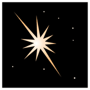
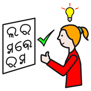
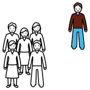

Secondo incontro, modulo 8
Token economy e CAA
Un gettone per ogni passo verso l'obiettivo: rendere visibile un progresso che a parole resterebbe astratto.
Come funziona

stella premio
premio finire
finireUn gettone per ogni comportamento atteso, fino a una ricompensa concordata. Un «bravo!» è astratto; un gettone si vede, si tocca, si conta.
Perché si sposa con la CAA
 pittogrammi
pittogrammi vedere
vedere
capireSe il bambino comunica già con i simboli, anche il rinforzo parla la stessa lingua visiva: niente da imparare in più.
ancora un
gettone!
La tabella dei gettoni
 gioco con la palla
gioco con la pallaUna striscia con 3-5 caselle e, alla fine, il simbolo dell'obiettivo. Stessa logica della task analysis: ogni passo conta, ogni passo si vede.
da calibrare
Attenzioni
 attenzione
attenzione pochi
pochi subito
subito- Il premio si sceglie con chi conosce bene il bambinoQui torna utile la scelta tra due.
- Obiettivi viciniSi comincia con 2-3 gettoni.
- L'obiettivo è l'autonomiaNon la dipendenza dal premio.
Il rinforzo come ponte
premio contento
contento
da soloÈ una tecnica di origine comportamentale. La sua forza, rendere visibile il progresso, è anche il rischio: usata senza criterio può ridurre la motivazione interna. Con il tempo si passa gradualmente a gratificazioni sociali.